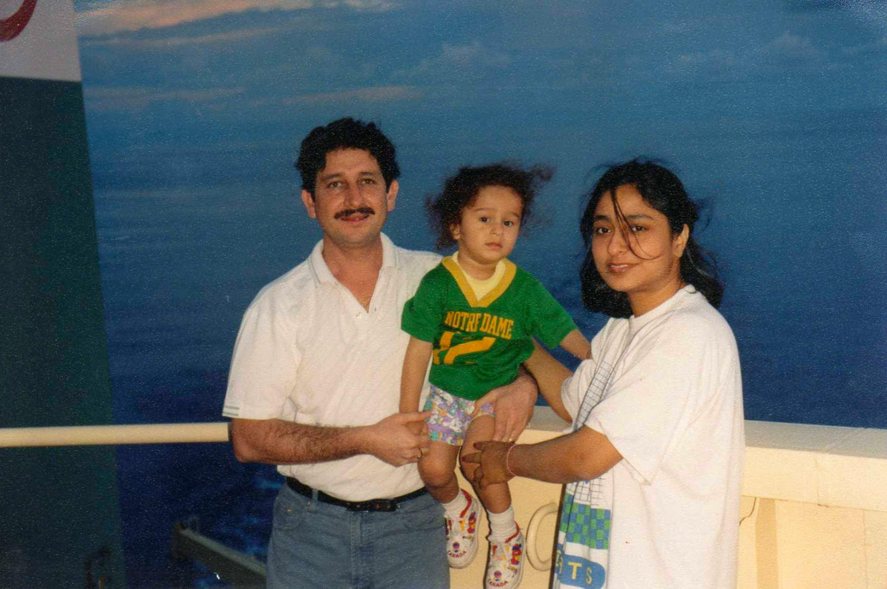

Personal Playground
← Back to main pageSome personal, impersonal, and random stuff here.
Quotes that I Like
General Life Philosophy
- "We are what we repeatedly do. Excellence, then, is not an act but a habit." - Aristotle
- "I've had more trouble with myself than any other man I've ever met." - Wayne Bennet
- "The heart of personal effectiveness is not necessarily any special knowledge or secret: it is doing the basics consistently well." - Michael Nielsen
Research
- "The ultimate goal of research is new ideas, insights, tools and technologies, and this goal must inform the process of self-development." - Michael Nielsen
Health and Fitness
I am an ardent believer in the philosophy that "In a healthy body, resides a healthy mind." To that end, I workout routinely (3-4 times a week) which is a mixture of weight training at the gym, performing calisthenics / gymnastics, running, cycling, swimming, indoor bouldering, and anything else that can get my heart racing and blood pumping ;).
From the ages of 9-15 I actively played football (soccer) semi-professionally at my school, district level. I was part of the Garhwal Sporting Football Club based in Dehradun, Uttarakhand, India. At Garhwal Sporting F.C. I was fortunate enough to play with players who had represented the Indian National Football team at the Under-19 category. Additionally, I was also fortunate enough to play alongside and witness the greatness of a young Anirudh Thapa who plays as a midfielder for the current senior men's Indian National Football team. However later life came about and I was pushed into a different world of studies and academia which I now enjoy thoroughly. I do watch football (I have been an Arsenal F.C. fan since 2005), and also try to play as and when I get the chance to.
CalElite
This is a hybrid training program that I devised which combines a mixture of weighted training at the gym, and body-weight (calisthenics) exercises. You can download a free pdf of this program here - (pdf link here).
For folks just starting out into weightlifting or bodybuilding and looking for an easy program to begin with try this out: workout pdf. Feel free to reach out if you wanna chat about working out, bodybuilding or anything in general :)
Countries That I Have Travelled To

Born in the mountains I share a special bond with them. And being the son of a sailor, I love the sea, and have been very fortunate to travel with my father on his ship battling the rough seas and exploring the deep ocean waters alongside my hero.
And now that I am living in Europe, and being a researcher I do have to travel either due to work, else to satiate the pure joy and uncertainty of travelling to new lands.
Below is a list of countries I have visited. (Syntax: Country - city1, city2, ...). I also sporadically add few pictures to my instagram page here.
Asia
- India - (too many to list, will do that soon ...)
- Malaysia - Kuala Lumpur
- Singapore
- Taiwan
- Thailand - Bangkok
Europe and UK
- Austria - Klosterneuburg, Montafon, Vienna, Zürs
- England - London
- France - Colmar, Paris, Normandy (region in France), Strasbourg
- Finland - Helsinki, Rovaniemi
- Germany - Saarbrücken, Frankfurt, Munich, Hamburg, Stuttgart, Tübingen, Heidelberg (few more small towns here and there)
- Luxembourg
- Poland - Krakow, Krynica-Zdrój
- Portugal - Porto
- Netherlands - Rotterdam
- Scotland - Glasgow, Edinburgh, Stirling, Luss (Loch Lomond)
- Switzerland - Basel
Africa
- South Africa - Cape Town
Australia
- Australia - Brisbane, Melbourne, Sydney
North America
- United States of America (U.S.A.) - Aspen, Carbondale, Monterey, Carmel by the Sea, Dallas, Los Angeles, Newport News, San Diego, Santa Cruz, San Francisco